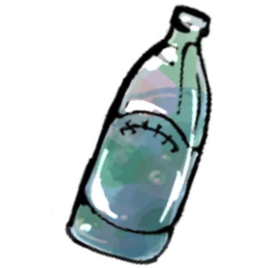

쓰레기 섬이란?
일본과 하와이 섬 사이에 있는 태평양을 떠다니는 두 개의 거대한 쓰레기 더미로, 90%가량이 썩지 않는 비닐과 플라스틱류로 이루어져 있다.
쓰레기 섬의 문제점
분해되는 데 오랜 시간이 걸리는 플라스틱은 해류에 의해 마모되거나, 태양열에 의해 부스러지며 미세 플라스틱이 된다. 해양 생물들은 이런 미세 플라스틱을 음식으로 착각해서 섭취하고 성장과 번식에 장애를 겪거나, 장폐색, 섭식 장애 등 갖가지 질병에 시달리게 된다. 또, 폴리에틸렌, 폴리프로필렌, 나일론과 같은 석유화학 물질로 만들어진 플라스틱은 주변의 유해 화학 물질을 자석처럼 끌어당기는 특성이 있다. 유독 물질을 흡수한 미세 플라스틱은 결국 물고기의 몸을 거쳐 인간에게 되돌아온다.
쓰레기 섬 해결방안
작년 말, 보얀 슬랫(Boyan Slat)에 의해 창립된 비영리 연구기관인 ‘오션클린업파운데이션(Ocean Cleanup Foundation, OCF)’은 튜브 울타리를 통해 대규모 쓰레기 섬을 제거하겠다는 계획을 실행으로 옮겼다. 그러나 쓰레기 수거 장치가 파도와 해풍 등의 영향으로 설치한지 약 4개월 만에 고장이 나 결국 철수했다. OCF는 올해 6월 프로젝트를 재개한다고 입장을 밝혔다. 하지만 일부 전문가들은 장치가 태풍 등을 견뎌내지 못할 것이라면서 지적했고, 그 실효성에 대해서도 의문을 제기하고 있다.